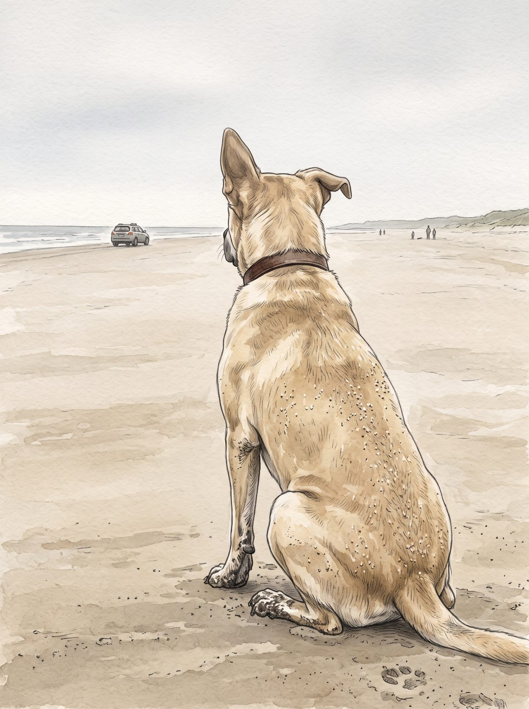

I
Razón de Perro
«solo los vi alejarse me senté»
Cholito en la playa, con las patas mojadas y arena en el lomo, mirando irse la máquina. La gente se ve lejana, como la describes.
La luz es un día gris: el cuento no dice la hora, y evité el atardecer para no dramatizar lo que tú cuentas con calma.